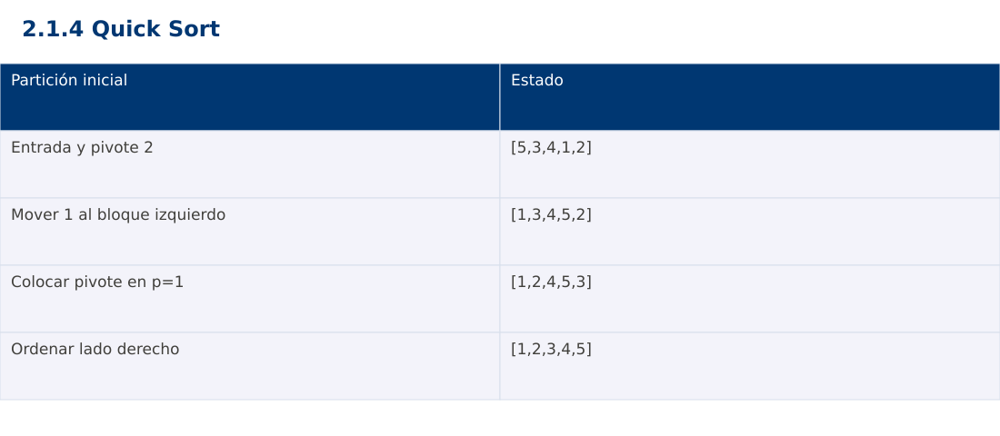

Estructura de Datos
2.1.4 Quick Sort · Python
Ing. Pablo Torres, Mgtr. · Universidad Politécnica Salesiana · Computación · Cuenca
Unidad 2: Ordenamiento, búsqueda y recursividad
Índice del curso · Presentación Java · Evaluación Moodle
1. Conceptos y ejemplos
Prerrequisitos: variables, condiciones, bucles, funciones y arreglos. El contenido desarrolla los conceptos adicionales que utiliza.
1.1 Partición alrededor del pivote
La variante Lomuto usa el último elemento como pivote y mantiene una frontera del bloque con claves ≤pivote. Recorre el intervalo y mueve cada clave admisible a ese bloque. Al finalizar coloca el pivote en la frontera. Entonces la izquierda contiene claves ≤pivote y la derecha claves >pivote. Las particiones todavía requieren ordenamiento: particionar una vez no ordena todo el arreglo.
1.2 Progreso de las llamadas
Se ordenan los intervalos [lo,p-1] y [p+1,hi]. El pivote queda excluido porque ya está en una posición definitiva. El caso base lo≥hi abarca intervalos vacíos y de un elemento. Incluir p de nuevo puede impedir que el problema disminuya. Antes de cada llamada conviene justificar cuál es su tamaño.
1.3 Equilibrio y peor caso
Particiones equilibradas dan Θ(n log n). Con pivote final y entrada ordenada o con todas las claves iguales, una partición puede tener tamaño n-1 y la otra cero. La recurrencia T(n)=T(n-1)+Θ(n) produce Θ(n²). La profundidad pasa de Θ(log n) en el caso equilibrado a Θ(n) en el peor. El costo esperado Θ(n log n) exige condiciones como pivote aleatorio o una distribución especificada.
1.4 Memoria y variantes
La partición trabaja sobre el mismo arreglo con espacio constante, pero la pila de llamadas añade memoria. La variante usual es inestable. Un pivote aleatorio reduce el riesgo sistemático sin eliminar el peor caso matemático. La partición de tres vías distingue menores, iguales y mayores y resulta útil con muchas claves repetidas. No se afirma que Quick Sort sea universalmente el más rápido.
Traza de referencia
| Partición inicial | Estado |
|---|---|
| Entrada y pivote 2 | [5,3,4,1,2] |
| Mover 1 al bloque izquierdo | [1,3,4,5,2] |
| Colocar pivote en p=1 | [1,2,4,5,3] |
| Ordenar lado derecho | [1,2,3,4,5] |
La tabla muestra estados o conteos concretos. Reproduce cada transición y comprueba qué propiedad permanece verdadera. Una traza finita ayuda a encontrar errores; la justificación del algoritmo también exige explicar por qué progresa y por qué la condición final satisface el contrato.

Particularidades de Python
Python usa indentación para delimitar bloques y enteros de precisión arbitraria. // realiza división entera para índices no negativos. list.copy() crea una copia superficial; las listas y diccionarios mutables pueden compartirse mediante referencias. Las funciones de esta demostración reciben los tipos descritos en el contrato. Los assert son comprobaciones de desarrollo y deben ejecutarse sin la opción -O. No se requieren paquetes externos.
2. Demostración guiada
Problema y contrato: Arreglo de enteros válidos. Modifica la entrada en orden ascendente y conserva repeticiones. Acepta vacío y un elemento. La biblioteca de ordenación se usa únicamente como oráculo de verificación, no dentro del algoritmo.
- Lee el contrato y predice la salida del caso principal antes de ejecutar.
- Identifica las variables que representan el estado y vincúlalas con la traza de la sección anterior.
- Ejecuta el archivo completo. Las comprobaciones internas detienen el programa si una condición esperada falla.
- Cambia una entrada del bloque de ejecución, predice el resultado y contrástalo. Conserva el núcleo de la demostración como referencia.
Código completo
Este bloque se genera desde ejemplos/demo.py mediante scripts/sync-code.py; ese archivo es la fuente del código. La PC tiene otro objetivo y sus casos de aceptación aparecen en la sección 3.
def sort(a):
def partition(lo, hi):
pivot, i = a[hi], lo
for j in range(lo, hi):
if a[j] <= pivot:
a[i], a[j] = a[j], a[i]
i += 1
a[i], a[hi] = a[hi], a[i]
return i
def quick(lo, hi):
if lo >= hi:
return
p = partition(lo, hi)
quick(lo, p - 1)
quick(p + 1, hi)
quick(0, len(a) - 1)
if __name__ == "__main__":
for data in ([5,3,4,1,2], [], [1], [2,2,1], [-1,5,0], [1,2,3], [3,2,1]):
a = data.copy()
sort(a)
assert a == sorted(data)
a = [5,3,4,1,2]
sort(a)
print(a)
Ejecución
Desde esta carpeta 02-searching-and-sorting-algorithms/2.1.4-quick-sort/python:
python3 ejemplos/demo.py
Salida esperada de la demostración
[1, 2, 3, 4, 5]
La salida procede de los datos fijos del bloque de ejecución. Las verificaciones internas también cubren los casos adicionales que se leen en el código. El registro de ejecuciones realizadas se conserva en verificación, separado de estas expectativas.
3. PC — 2.1.4: Quick Sort
Implementa una variante con selección reproducible de pivote aleatorio. Compara número de comparaciones y profundidad con pivote final para entradas ordenadas, inversas y repetidas. Limita tamaños para evitar agotar la pila.
Requisitos de la entrega
- Implementa la actividad en una versión, a tu elección entre Java, Python y JavaScript. Las PL se entregan exclusivamente en Java.
- Separa la lógica del procesamiento de la entrada y la impresión. Documenta tipos, dominio válido, salida y comportamiento de error.
- Conserva los casos de aceptación siguientes y agrega al menos un caso que compruebe el invariante del tema.
- No copies como solución el bloque de demostración: resuelve la ampliación pedida. No se suministra una solución completa de esta PC.
Casos de aceptación de la PC
| Entrada o escenario | Resultado exigido |
|---|---|
| [1,2,3,4] | [1,2,3,4]; registrar profundidad |
| [2,2,2,2] | conservar los cuatro valores |
| [] | terminación inmediata |
Ejecución y evidencia
Desde la carpeta de tu entrega, ejecuta el programa con python3 main.py. Si divides Java en paquetes, utiliza los comandos de la plantilla del estudiante. Registra entrada, resultado esperado, resultado real y explicación de cualquier diferencia en evidencias/PC2.1.4.md de tu repositorio personal.
Crea commits pequeños: feat(pc2.1.4): implementar contrato, test(pc2.1.4): cubrir casos limite y docs(pc2.1.4): explicar costos. Sustituye los mensajes por descripciones del cambio real. Obtén el hash con git rev-parse HEAD y revisa una etapa con git show HASH. La actividad no necesita continuar un proyecto acumulativo.
Lo esencial
- La variante Lomuto usa el último elemento como pivote y mantiene una frontera del bloque con claves ≤pivote.
- La partición trabaja sobre el mismo arreglo con espacio constante, pero la pila de llamadas añade memoria.
- Explica el contrato, traza una entrada y justifica tiempo y memoria con las condiciones descritas.
Referencias
- Programa analítico y referencias del docente: correspondencia en el documento docente de este contenido.
- Referencia técnica de Python.
- Bibliografía y análisis de fuentes.